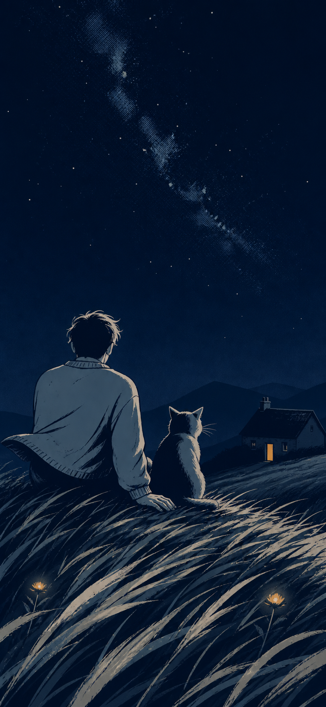
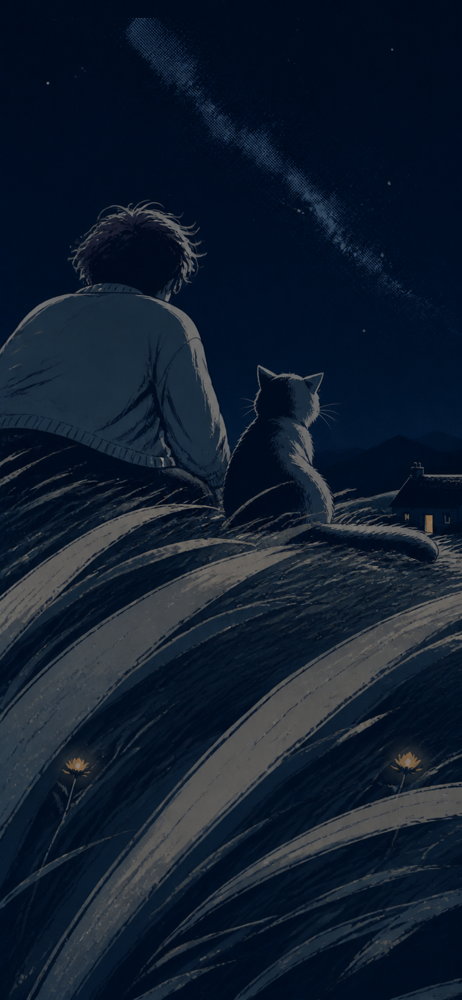
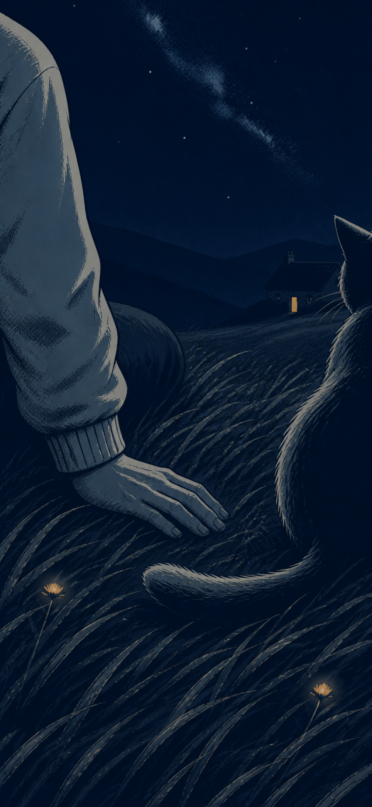

STORY-ILLUSTRATION-REDESIGN-V1-B-KF-R1
无字夜漫画 · 同一阵风
B 风格已经选定。这次不再把同一张图换五次，而是让三种景别分别讲“坐稳、风经过、余风”。每一帧仍是可以独立停留的完整插画。
B 视觉语言已选三帧待批准生成图仅作探索未改 Cocos未构建／未上传
B01

坐稳
天空先出现，身体的重量慢慢落到草地上。
只发生：远草刚接到风。
B02

风经过
镜头落到草高，一阵风穿过草、衣角、猫耳和尾尖。
只发生：同一阵风被一眼看见。
B03

余风
画面靠近手与猫尾，关系不被说明，夜晚继续。
只发生：猫尾和两根草尖留下余势。
保持不变
- 成年人左、普通猫右，共同看天空；不互看、不看门。
- 一条淡银河、右侧稳定暖门、恰好两朵弱光花。
- 室内仍是已批准的整屋明亮暖家，本轮不改。
这一轮的批准对象
只批准三帧故事与镜头。批准后才进入正式分层重绘和开发；这些生成探索图不会直接进入微信包。